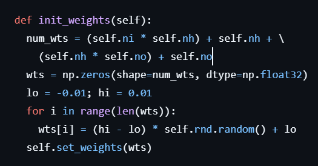
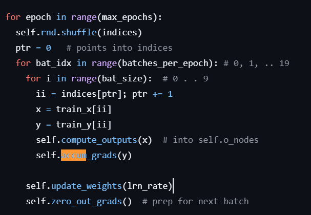

Last summer, I had one goal: to work my way to being able to code and understand language classifier. The steps before were vast, but now on the other side, I can see the importance of going through each and every one before jumping to the end.
First in line, a neural network. It's easy to get into the weeds of what a classifier can do, should do, or won't do. But at the base of it all is how it works. Very similar to the neurons I spent most of my time looking at, neural classifiers do have one extra step- going back.
For supervised learning, you start with two items: features and labels. In my project, the features were information about a person: where they were from, how long were they in school, what kind of area they lived in. And then my label was their political leaning, conservative or liberal. The classifier is still a blackbox, where you input the features and somehow get the (hopefully) right label. But this blackbox is pretty easy to open up and understand.
The features go into little nodes called 'inputs'. Think, circles. Each circle has a couple lines attached to it, called 'weights'. These weights are attached to more nodes (not inputs, just nodes), attached to more weights, to more nodes, and so on. Until the nodes don't have any more weights on the other end. These nodes are called 'output' nodes. It's where our labels will lie.
The magic about a lot of machine learning is that there is a component of change. But our features/inputs and our labels/outputs stay constant. So, what changes?
It's the lines, the weights.
After the inputs are filled with features, they are multiplied by an arbitrary weight assigned. The product is moved to the next layer, where they are summed and non-linearly modified, before being multiplied by the next set of weights. On and on, until the last (output) layer has nodes filled with values.
But wait. Don't we already have the label information? We do, and now we bring that out. Comparing the output the classifier gives, and the label we already have, we calculate the 'loss, which, in essence, asks us how far off we are from the right answer. The network then performs that extra step, and goes backwards. Using the information that the 'loss' gives, backpropagation allows the network to go back and adjust the weights to bring us as close as possible to the right answer.
This was one singular iteration of training. This process is repeated over and over, depending on multiple specific 'hyperparameters' such as the size of one iteration of training, the total number of training datapoints, or the learning rate of the network.
It's all fun and games to talk about it, but on an IDE it looks a little more like glorified math. The first step is creating a Neural Network class. This class has all the required lists, the input nodes, the intermediate 'hidden' nodes, the output nodes, and all the associated weights. Working for a semester with linked lists really helps keeping track of them. All the hidden nodes and output nodes are assigned a random bias, which will change as training occurs along with the weights.

Then, we have a curious little set of lists. Gradients? This is where we store information about how much a certain part of the network needs to change, before actually changing it. Every iteration, the gradients are zeroed out to keep things clean. To keep things consistent across tests, a random seed is declared and instantiated. And then we also initialize the weights with random numbers. Remember, these change as training occurs.

Some important methods also include setting weights (for each training iteration), getting weights, computing output (see what the model gives us), accumulating gradients (to see how far the output misses the mark), and updating weights (according to what the gradients told us). Note that we don't always update weights after every input. One of the hyperparameters that can be set is how many inputs the classifier should run before updating weights. After the weights have been updated, the gradients are zeroed out again, allowing for a new set to start.
After training, this model tests on a given data set to see how much it's learnt. Improving this accuracy can be done by tweaking 'hyperparameters'. Things like how much of the change the model will implement (the learning rate), how big one training cycle is (the batch size or epoch), and how many training cycles it completes (max epochs) can be used to alter how accurate a model is. Increasing the dataset, or making it more representative of the true population can also help.

And that's just about it for a simple classifier. Up next, making things a lot easier with what python has graced us with.